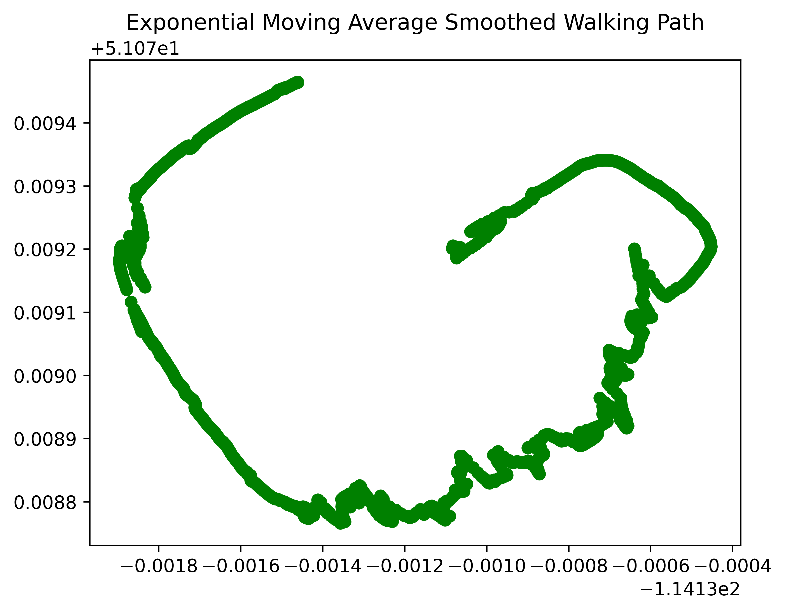

Raw data plot showing the recorded surveying path without applying any smoothing methods.

Graph after applying a Moving Average filter.

Gaussian smoothing applied to reduce noise while maintaining structure.
Savitzky-Golay filter used to preserve sharp edges while reducing the influence of extrenous values.

3D representation of the recorded route, including altitude changes.